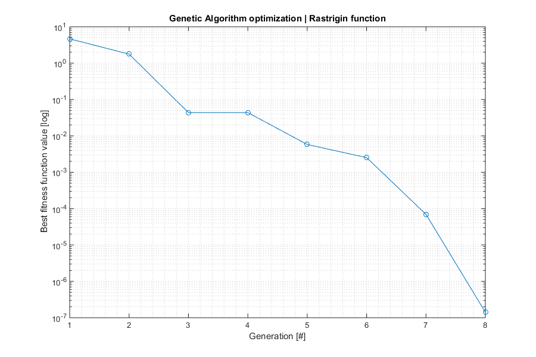
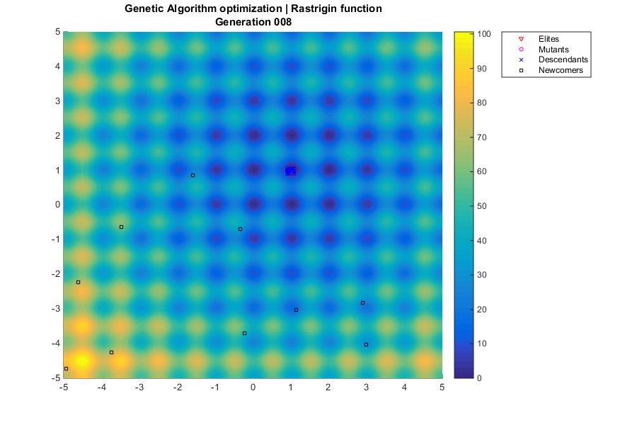

Contents
Example AGA
Find minima of a function with Genetic Algorithm Manel Soria, David de la Torre and Arnau Miro - ETSEIAT
% Clean-up close all; clear; % Our test is a R^2->R function based on Rastrigin function. It is % challenging because it has infinite local extrema, located at integer % numbers (ie, 8,-9) % The global minimum is at (1,1), and its value is 0 ras = @(x,y) 20+(x-1).^2+(y-1).^2-10*(cos(2*pi*(x-1))+cos(2*pi*(y-1))); % Define GA function options opts.ninfo = 2; % Verbosity level (0=none, 1=minimal, 2=extended) opts.label = 10; % Label (identification purposes) opts.paral = 1; % Parallel execution of fitness function opts.fhist = 2; % Saved history level (0=none, 1=fitness, 2=full) % Define GA parameters ng = 50; % Number of generations np = 200; % Population size N = [3,... % Number of elites floor(np*0.1),... % Number of mutants floor(np*0.05),...% Number of newcomers floor(np*0.2)]; % Number of parents goal = 1E-5; % Target fitness value % Auxiliary function ranrange = @(a,b,n) a + (b-a)*rand(n,1); % n random values between a i b % Define GA functions funique = @(x) x; % Discard identical individuals: currently not in use fitfun = @(x) ras(x(1),x(2)); % Fitness function - TO BE MINIMIZED mutfun = @(x,f) x + ranrange(-0.1,0.1,2); % Mutation: small random mov repfun = @(x,y) (x+y)/2; % Reproduction: average ranfun = @() ranrange(-5,5,2); % Random individual prifun = @(x) fprintf('%f %f ',x(1),x(2)); % Print an individual % Randomize random seed rng('shuffle'); % We don't want repeatability in the GA % Execute Genetic Algorithm [lastPopGA,bestFitGA, ... nite,history] = aga(opts,np,ng,N,goal,... funique,fitfun,mutfun,repfun,ranfun,prifun); % Now, we can easily improve the accuracy of the local extremum found options = optimset('TolFun',1e-8,'Display','none'); [bestIndFMS,bestFitFMS] = fminsearch(fitfun,lastPopGA{1},options); % Display results of aga and fminsearch algorithms fprintf('\nAlgorithm \tBest individual (x,y) \tValue\n'); fprintf('AGA \t\t%1.6f,%1.6f \t\t%1.6E\n',lastPopGA{1},bestFitGA); fprintf('FMS \t\t%1.6f,%1.6f \t\t%1.6E\n',bestIndFMS,bestFitFMS);
GA label=10 g= 1 ng=50 best=4.579523e+00 -0.070856 2.081671 GA label=10 g= 2 ng=50 best=1.042950e+00 1.982870 1.009801 GA label=10 g= 3 ng=50 best=4.407446e-01 0.983969 0.955530 GA label=10 g= 4 ng=50 best=2.655336e-02 1.011255 1.002685 GA label=10 g= 5 ng=50 best=6.965530e-03 0.994110 0.999352 GA label=10 g= 6 ng=50 best=4.059983e-03 0.997230 0.996423 GA label=10 g= 7 ng=50 best=2.197082e-05 0.999736 1.000202 GA label=10 g= 8 ng=50 best=5.477901e-06 1.000013 0.999834 GA label=10 best=5.477901e-06 1.000013 0.999834 goal=1.000000e-05 achieved !! Algorithm Best individual (x,y) Value AGA 1.000013,0.999834 5.477901E-06 FMS 1.000003,1.000004 3.828461E-09
Plot fitness
% Get fitness history if opts.fhist>1 % Full history; get fitness values history_fitness = zeros(length(history),1); for i=1:length(history) history_fitness(i) = history{i,2}(1); end; else history_fitness = history; % Simple history end; % Create figure fh1 = figure('Position',[400,200,900,600]); % Plot history semilogy(history_fitness,'o-'); % Beautify plot grid minor; title('Genetic Algorithm optimization | Rastrigin function'); xlabel('Generation [#]'); ylabel('Fitness function value [log]');
Plot generations
% Only show generations when outputting full history if opts.fhist>1 && iscell(history) % Create figure fh2 = figure('Position',[400,200,900,600]); % Plot rastrigin function [x,y] = meshgrid(-5:0.05:5,-5:0.05:5); z = ras(x,y); bh = surf(x,y,z,'LineStyle','none'); colorbar('Location','EastOutside'); view(0,90); hold on; % Virtual position for population z = 100; % Legend lh = plot3(0,0,-z,'rv',0,0,-z,'bo',0,0,-z,'mo',0,0,-z,'ko'); legend(lh,'Elites','Mutants','Descendants','Newcomers',... 'Location','NorthEastOutside'); % Plot generations ph = cell(length(history),np); % Handles for g=1:length(history) % Title title({'Genetic Algorithm optimization | Rastrigin function';... sprintf('Generation %03.0f',g)}); % Plot individuals for i=1:np % Select plotting marker (elite, mutant, normal, newcomer) if g==1 % First generation: plot initial population as newcomer marker = 'ko'; % Newcomers else % Following generations: plot evolved population nd = length(history{g,1})-N(1)-N(2)-N(3); % descendants if i<N(1), marker = 'rv'; % Elites elseif i<N(1)+N(2), marker = 'bo'; % Mutants elseif i<N(1)+N(2)+nd, marker = 'mo'; % Descendants else marker = 'ko'; % Newcomers end; end; % Plot individual x = history{g,1}{i}(1); y = history{g,1}{i}(2); ph{g,i} = plot3(x,y,z,marker,'MarkerSize',4); end; % Wait pause(1); % Delete individuals if g~=length(history) % Keep last frame for i=1:np, delete(ph{g,i}); end; end; end; end;